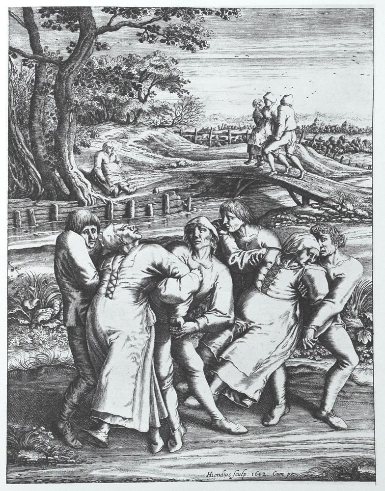

1Bir kadın dans etmeye başladı
Temmuz 1518'de, o zamanlar Kutsal Roma Germen İmparatorluğu'na bağlı olan Strazburg şehrinde, kaynaklarda adı Frau Troffea olarak geçen bir kadın sokağa çıkıp dans etmeye başladı. Müzik yoktu, bir kutlama da yoktu. Kadın günlerce, yorgunluktan yere yığılana kadar dans etti, biraz dinlenip yeniden kalktı.
Kısa sürede başkaları da ona katıldı. Çağdaş kayıtlara göre birkaç hafta içinde dans edenlerin sayısı onlarca kişiye, bazı anlatımlara göre ise 400 kişiye kadar çıktı. Dans edenlerin kendi istekleriyle değil, kendilerini durduramadıkları için dans ettikleri anlatılır.
2Yetkililerin tuhaf çözümü
Şehrin yöneticileri doktorlara danıştı. Doktorlar durumun 'sıcak kan' kaynaklı doğal bir hastalık olduğuna karar verdi. Önerdikleri tedavi ise bugün bize çok tuhaf geliyor: Hastaların dansı bırakması değil, daha çok dans ederek hastalığı atması gerekiyordu.
Bu yüzden şehirde dans edenler için alanlar ayrıldı, bir sahne kuruldu, müzisyenler ve hastaları ayakta tutacak güçlü kişiler tutuldu. Bugün tarihçiler bu kararın, salgını daha görünür yaparak büyütmüş olabileceğini düşünüyor. Sonunda yetkililer fikir değiştirdi, dansı yasakladı ve hastaları dua etmeleri için bir tapınağa gönderdi.

3Ölen oldu mu?
Bazı popüler anlatımlarda her gün onlarca kişinin bitkinlik, kalp krizi ya da felçten öldüğü söylenir. Ancak bu sayılar dönemin güvenilir kayıtlarında açıkça doğrulanmıyor. Tarihçiler, bazı kişilerin ölmüş olabileceğini ama kesin bir rakam verilemeyeceğini belirtiyor.
Kesin olan şu: Olay şehir kayıtlarına, doktor notlarına, vaazlara ve tarihçilerin yazılarına girecek kadar büyük ve gerçekti.
4Bilim ne diyor?
Bu olayı en ayrıntılı inceleyen tarihçilerden biri John Waller'dır. Waller'a göre en olası açıklama toplu psikojenik hastalıktır, yani halk arasında 'kitlesel histeri' denen durum. Strazburg o yıllarda kıtlık, hastalık salgınları ve büyük bir yoksulluk içindeydi. İnsanlar ağır stres altındaydı.
Bölgede, Aziz Vitus'un öfkelendiğinde insanlara dans laneti gönderdiğine dair yaygın bir inanç vardı. Waller, aşırı stres ile bu inancın birleşince insanların bir tür trans hâline girdiğini öne sürüyor. İnsanlar 'lanetlendiklerine' inandıkları için dans etmeye başlıyor, başkalarını gördükçe bu davranış yayılıyordu.
Bir başka eski açıklama, çavdar mahmuzu adlı küf mantarıyla zehirlenmedir. Bu mantar halüsinasyon ve kasılmalara yol açabilir. Ancak birçok araştırmacı bunu zayıf buluyor, çünkü bu zehirlenme kan dolaşımını bozar ve insanların haftalarca dans edebilmesini zorlaştırırdı.
💡 Biliyor muydun?
- Avrupa'da 1518'den önce de benzer 'dans salgınları' kaydedildi. En büyüklerinden biri 1374'te Ren Nehri çevresinde görüldü.
- Tarantella adlı İtalyan halk dansının, örümcek ısırığını 'dans ederek atma' inancıyla ilişkilendirildiği anlatılır.
- Toplu psikojenik hastalık bugün de görülür. Bu sitedeki Tanganika gülme salgını da buna bir örnek.
✅ Kaynaklar
- Waller (2009), The Lancet — A forgotten plague: making sense of dancing mania
- Britannica — Dancing plague of 1518
- Wikipedia — Dancing plague of 1518 (kaynakçalı)
📷 Görseller
- Kapak: Bilinmeyen yazar · Public domain · Wikimedia Commons
- Pieter Bruegel'in 1564 tarihli çizimine dayanan gravür: Dans krizi yaşayan hacılar: Pieter Brueghel the Elder · Public domain · Wikimedia Commons